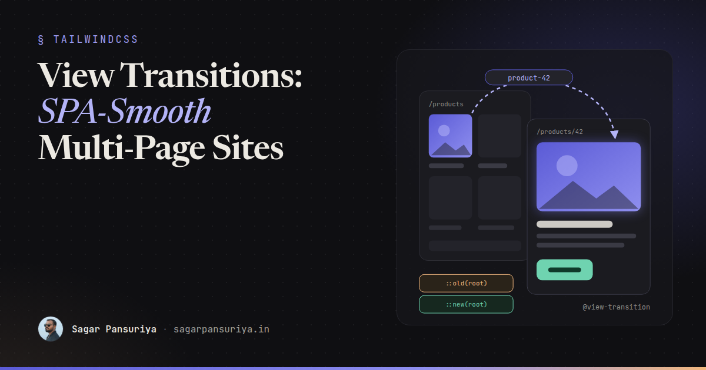
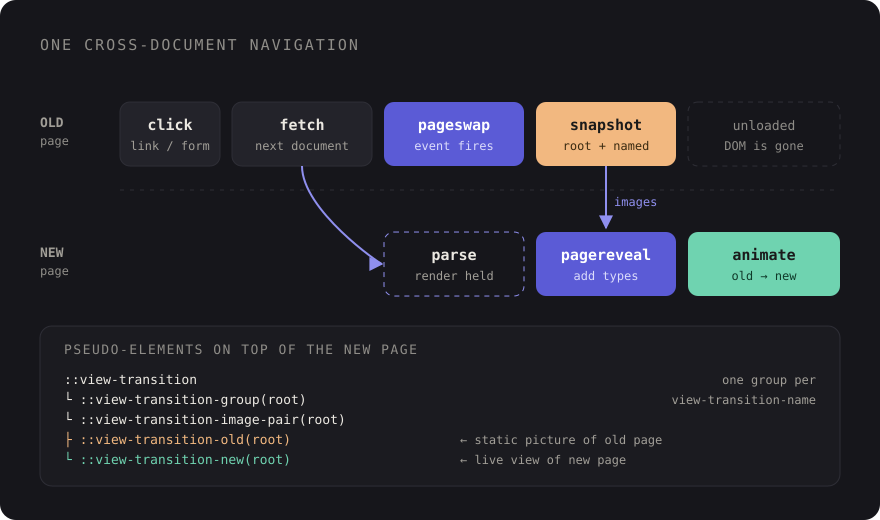

Cross-Document View Transitions: SPA-Smooth Navigation for Multi-Page Sites


You've probably had this conversation. A client looks at their brochure site or their Laravel admin panel and says it feels "a bit clunky" compared to some app they use. Every click is a white flash and a hard cut. The usual answer used to be "we'd need to rebuild it as an SPA", which is a big bill for what is really an animation problem.
That answer is out of date. Cross-document View Transitions let the browser animate between two completely separate HTML pages. No router, no hydration, no client-side state. Your server keeps rendering full pages, and the browser handles the in-between.
This post walks through turning it on, animating shared elements like a product image that grows into a hero, customising the animation, respecting reduced motion, and the two events that let you do smarter things with JavaScript. Everything here works the same for Blade, WordPress themes and plain static HTML, because it's just CSS and a bit of script.
The one line that turns it on
Add this to a stylesheet that loads on both the page you're leaving and the page you're arriving at. In practice that means your main CSS file:
/* resources/css/app.css (or your theme's main stylesheet) */
@view-transition {
navigation: auto;
}That's it. In a supporting browser, same-origin navigations between two pages that both opt in now get a default cross-fade instead of a hard cut. Clicking a link, submitting a form and going back or forward all qualify. Typing a URL into the address bar doesn't, and neither does a navigation to another origin.
Both sides have to opt in, which is a nice safety property. If your marketing site and your app live on the same origin but only one ships the rule, navigations between them stay normal.
How it works under the hood
It helps to know what the browser is actually doing, because it explains most of the gotchas you'll hit later:

- The user clicks a link. Just before the old page is unloaded, the browser fires a
pageswapevent on it and takes a snapshot of it, plus a separate snapshot of every element that has aview-transition-name. - The new page loads. Rendering is held back until it's ready for its first frame, then the
new page gets a
pagerevealevent. - The browser builds a tree of pseudo-elements on top of the new page:
::view-transition-old(...)holds the old snapshot,::view-transition-new(...)holds the live new view, and they animate from one to the other. - When the animations finish, the pseudo-elements are removed and you're left with the normal new page.
The key insight: the old page is a picture. By the time the animation runs, its DOM is gone. You can't run JavaScript on it or interact with it. You're animating screenshots, and that's exactly why it's cheap.
Shared elements with view-transition-name
A cross-fade is pleasant. The real "app feel" comes from elements that appear to move between pages: a product thumbnail that grows into the hero image, a card title that slides into the page heading, a header that stays perfectly still while the content changes.
You get that by giving the element the same view-transition-name on both pages. The
browser matches them up and animates position and size between the two:
{{-- resources/views/products/index.blade.php --}}
@foreach ($products as $product)
<a href="{{ route('products.show', $product) }}" class="card">
<img src="{{ $product->thumbnail_url }}" alt=""
style="view-transition-name: product-{{ $product->id }}">
<h3>{{ $product->name }}</h3>
</a>
@endforeach
{{-- resources/views/products/show.blade.php --}}
<img src="{{ $product->hero_url }}" alt="{{ $product->name }}" class="hero"
style="view-transition-name: product-{{ $product->id }}">The same idea in a WordPress theme, using the post ID so every card gets a unique name:
<?php the_post_thumbnail('medium', [
'style' => 'view-transition-name: post-' . get_the_ID(),
]); ?>Two rules matter here:
- Names must be unique on a page. If two visible elements share a name, the
browser can't pair them and skips the transition entirely. That's why the ID goes into the
name. Elements that are
display: nonedon't count. - Persistent chrome gets a fixed name. Give your site header
view-transition-name: site-headerin CSS. It then gets its own snapshot and doesn't cross-fade with the page body, so it looks like it never moved.
.site-header { view-transition-name: site-header; }
.site-footer { view-transition-name: site-footer; }If you have lots of named elements that should share one animation, the
view-transition-class property lets you target them as a group in supporting
browsers, instead of writing a selector per name.
Customising the animation
The default cross-fade is applied to the root group, which is everything that
doesn't have its own name. You style it with ordinary CSS animations on the pseudo-elements.
Here's a subtle slide-and-fade for page content:
@keyframes vt-out {
to { opacity: 0; transform: translateY(-12px); }
}
@keyframes vt-in {
from { opacity: 0; transform: translateY(12px); }
}
::view-transition-old(root) {
animation: 180ms ease-in both vt-out;
}
::view-transition-new(root) {
animation: 260ms ease-out 60ms both vt-in;
}
/* Shared elements: the group animates size and position */
::view-transition-group(*) {
animation-duration: 320ms;
animation-timing-function: cubic-bezier(.2, .8, .2, 1);
}A few tips from building these:
- Keep it short. 200 to 350 ms is the sweet spot. Anything longer starts to feel like the site is slow rather than smooth, which defeats the purpose.
- Watch aspect ratios. When a square thumbnail becomes a wide hero, the
default stretch can look odd. Setting
object-fit: coveron the old and new pseudo-elements for that name, plusheight: 100%, usually fixes it. - Don't animate everything. One shared element plus a calm root transition beats ten flying pieces.
::view-transition-old(*),
::view-transition-new(*) {
height: 100%;
object-fit: cover;
overflow: clip;
}Respect prefers-reduced-motion
Movement between pages can be genuinely uncomfortable for people with vestibular disorders. The simplest correct approach is to only opt in when the user hasn't asked for less motion:
@media (prefers-reduced-motion: no-preference) {
@view-transition {
navigation: auto;
}
}If you'd rather keep a gentle cross-fade for everyone and only drop the movement, leave the
opt-in global and wrap your transform keyframes in the media query instead. Either
is fine. Shipping slide animations with no reduced-motion handling is not.
Smarter transitions with pageswap and pagereveal
CSS gets you most of the way. The two events are for when the animation depends on where you're going, for example sliding left when moving forward through a multi-step form and right when going back.
Both events carry a viewTransition property, which is null when no
transition is happening. The cleanest tool for direction-aware animations is
transition types: you add a type in JavaScript and match it in CSS with the
:active-view-transition-type() selector.
<!-- inline in <head>, not in a deferred bundle -->
<script>
window.addEventListener('pagereveal', (event) => {
if (!event.viewTransition || !window.navigation?.activation) return;
const from = navigation.activation.from?.url;
const to = navigation.activation.entry.url;
if (!from) return;
const step = (url) => Number(new URL(url).searchParams.get('step') ?? 0);
event.viewTransition.types.add(step(to) > step(from) ? 'forwards' : 'backwards');
});
</script>@keyframes from-right { from { transform: translateX(40px); opacity: 0; } }
@keyframes from-left { from { transform: translateX(-40px); opacity: 0; } }
html:active-view-transition-type(forwards)::view-transition-new(root) {
animation: 260ms ease-out both from-right;
}
html:active-view-transition-type(backwards)::view-transition-new(root) {
animation: 260ms ease-out both from-left;
}Two things to know about pagereveal. First, it fires very early, before the first
render of the new page, so the listener has to be registered in a script in the
<head>. If you put it in a deferred Vite bundle, it'll often miss the event.
Second, the Navigation API isn't available everywhere yet, which is why the snippet checks for
it and bails out quietly.
On the outgoing side, pageswap is where you can set names dynamically. A common
trick: instead of naming every card on a listing page, only name the one that was
clicked, right before the snapshot is taken. That also avoids any risk of duplicate names.
Gotchas I'd check first
- Slow pages skip the animation. If the new page takes too long to become ready, the browser gives up on the transition and just shows the page. View Transitions don't hide a slow TTFB, they reward a fast one.
- Livewire's
wire:navigateis a different thing. It swaps pages with JavaScript on the same document. Cross-document transitions are for real, full page loads. Pick one approach per section of the app rather than mixing both. - Big named elements are expensive. Every named element becomes its own snapshot. Naming a huge, long page section costs memory on low-end phones.
- Test the back button. A page restored from the back/forward cache keeps its
DOM exactly as it was left, so any name or class you added in
pageswapwill still be there when the user comes back. Clean up after yourself.
Browser support and progressive enhancement
Cross-document View Transitions ship in Chromium-based browsers (Chrome and Edge) and in recent versions of Safari. Other browsers are working on it, so check MDN's View Transition API page for the current picture before you promise anything to a client.
The good news is that this is progressive enhancement in its purest form. A browser that
doesn't understand @view-transition ignores the rule and navigates exactly as it
always has. There's no polyfill to ship, no broken state, no fallback code path. The JavaScript
above guards on event.viewTransition, so it's a no-op too.
That makes the cost-benefit easy. Users on supporting browsers get a noticeably smoother site; everyone else gets the site they had yesterday.
A checklist to keep
- Add
@view-transition { navigation: auto; }to a stylesheet shared by every page, wrapped inprefers-reduced-motion: no-preference. - Give persistent chrome (header, footer, sidebar) a fixed
view-transition-name. - Pick one or two shared elements per page type and name them with a unique ID.
- Keep animations between 200 and 350 ms, and fix aspect ratio jumps with
object-fit: cover. - Register any
pagereveallistener in an inline<head>script, and always guard onevent.viewTransition. - Make the pages fast first. A transition can't start until the next page is ready.
For that "clunky" brochure site, this is an afternoon of CSS, not a rebuild. The server keeps doing what it's good at, and the browser finally handles the part in between.
Discussion